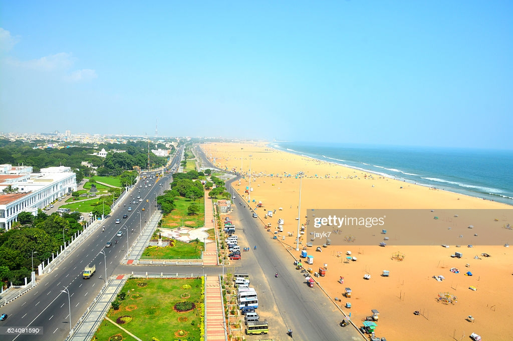

10 Best Places to Visit in India
|
Deeply traditional yet endlessly surprising, India is one of those destinations that ends up on every traveler's
bucket list at some point. They might dream of going to Agra to see the Taj Mahal in all its glory or exploring the
royal palaces scattered throughout Rajasthan. Others find themselves attracted to the jaw-dropping landscapes in
Darjeeling and Rishikesh, or the postcard-perfect beaches in Goa.
There's also India's big cities—New Delhi, Mumbai, and Kolkata—each of which has its own distinctive personality.
It's
impossible to get bored exploring the temples, markets, and colorful streets of India's biggest urban centers. The
hardest part of traveling to India is figuring out exactly what to see on your journey.
Whether you're going on an epic backpacking trip or a luxe vacation, plan your adventure with this list of the best
places to visit in India.
Note: Some businesses may be temporarily closed due to recent global health and safety issues
1.Agra

Taj Mahal in Agra
If there was just one symbol to represent all of India, it would be the Taj Mahal. The monument inspires
millions of tourists to make the trip to Agra every year, waking up before dawn to see magnificent structure
radiate
at sunrise. But Agra tops the list of the best places to visit in India for reasons that go beyond India's most
famous attraction.
The city in Uttar Pradesh is chock-full of marvelous Mughal monuments, like Itimad-ud-Daulah's Tomb and Akbar's
Mausoleum, decked out in hypnotic inlaid marble designs from top to bottom. Plus, tourists can also see another
UNESCO World Heritage Site: the Agra Fort. With so many wonders in just one place, Agra is a must-visit city for
tourists in India.
2.New Delhi

Humayun's Tomb
Despite its crowds and chaos, New Delhi offers tourists a lot to love. The colorful capital of India is the
perfect
marriage of heritage and modernity. Old Delhi contains some of the country's most treasured attractions, including
the Jama Masjid, Red Fort, and Chandni Chowk shopping thoroughfare. But throughout the sprawling city, tourists
can
explore countless other sites of spiritual and cultural importance.
Top tourist attractions in New Delhi include the Lotus Temple; India Gate; Humayun's Tomb; and India's tallest
minaret, Qutub Minar. Fill your days exploring these mesmerizing sites, and refueling at street-side chai stalls
and
high-end restaurants.
3.MUMBAI

The Gateway of India and the Taj Mahal Palace Hotel in Mumbai
Want to see a more cosmopolitan side of India? Head to the energetic, coastal city of Mumbai—home to
ultra-wealthy
entrepreneurs and the hottest Bollywood actors. Tourists are never far from five-star hotels or gourmet
restaurants
in this luxe city. And even if those activities are out of budget, a cruise down the beloved Marine Drive will
make
you feel like royalty as you catch a glimpse of the scenic coast and glamorous Art Deco buildings.
You can also see a more authentic, local side of Mumbai in the bustling "Thieves Market" or at the Churchgate
railway station, where hundreds of thousands of homemade lunches are packed up for delivery to the city's office
workers every day.
Make sure you devote a day to checking out Sanjay Gandhi National Park and exploring the 2,000-year-old Kanheri
Cave
carvings.
4.RAJASTHAN

Gadi Sagar Temple in Jaisalmer, Rajasthan
Translated to "Land of Kings," Rajasthan brims with remnants of the kings and queens of past centuries. Between
its
glittering palaces, stately forts, and lively festivals, this western state deserves a starring role in your trip
to
India.
Jaipur, part of the Golden Triangle Tourist Circuit, which also includes Agra and New Delhi, is one of the top
places to visit in Rajasthan. Dubbed "The Paris of India," it's known for its characteristic pink buildings,
lavish
City Palace, and jewelry stores galore.
The "Blue City," Jodhpur, offers tourists an equally unforgettable experience in its hilltop Mehrangarh Fort.
Udaipur oozes romance with its flower-lined streets and fantastic City Palace Complex, where the royal family
still
lives today.
And Jaisalmer looks like an Arabian Nights fairy tale brought to life, with its yellow sandstone structures and
historic havelis (mansions). No matter where you end up in this desert state, you'll be captivated by the magic of
Rajasthan.
5.VARANASI

A holy person on the Ganges River in Varanasi
One of the oldest continually inhabited cities in the world, Varanasi is arguably the holiest place in India. The
spiritual activities take place along the sacred Ganges River, where pilgrims bathe and mourners cremate recently
deceased relatives in plain view of passersby.
Tourists, on the other hand, find their own flavor of spiritualism taking sunrise boat rides, releasing floral
blessings that float on the river, and watching the fire-filled Hindu chanting ceremonies from the steep
ghats.
Away from the water, the streets of the old town twist and turn like an endless maze. Legend has it that there's
still no accurate map of Varanasi, and once you experience the labyrinthine city for yourself, you'll be inclined
to
believe it.
6.Chennai

Chennai is the capital city of Tamil Nadu. It is the political and cultural hub of Tamil Nadu and epitome of
Dravidian movement in India.
Chennai is referred as gateway to South India. It may not have a Red Fort or a Marine Drive or a Victoria
Memorial,
but it is India’s oldest modern city. There are several temples, churches, forts, mosques, palaces and natural
attractions in Chennai. It is one of the four metropolitan cities of India and is the capital of Tamilnadu. This
state is famous for its beach, temples, fabrics, monuments, Carnatic music, classical dances, and food. It’s an
ancient city known for its culture, trade and architecture. Chennai have its mark during the colonial times of
British and French. It’s a small Asia where you can witness different kinds of people, cultures, and traditions.
7.GOA

Palolem Beach, South Goa
India's not just full of big cities and holy sites—it also has incredible beaches down south in Goa. Its
stretches
of golden sand along the Arabian Sea offer something for every type of tourist, whether you're interested in
hanging
out with the backpacker crowd in laid-back beach huts or having a ritzy tropical getaway at a five-star resort.
One unique part of Goa is its blend of Indian and Portuguese cultures. You'll experience the fusion throughout the
destination, from its Baroque architecture and cathedrals to its spicy vindaloo curries and seafood dishes.
8.KERALA

Houseboat in Kerala
Head south of Goa, and you'll trade beaches for tranquil backwaters in Kerala. Nothing beats the experience of
hopping aboard a traditional thatched-top houseboat in Alleppey (also known as Alappuzha) and slowly floating
through palm-fringed lagoons and rivers, either as a day trip or overnight adventure. You'll enjoy freshly cooked
Indian cuisine on the water and breathtakingly beautiful natural sights and wildlife.
Easygoing Kerala is like a breath of fresh air from the intensity of cities like New Delhi and Jaipur up north.
Schedule some time here when you're in need of a break from the chaos.
9.DARJEELING
 Darjeeling with snow-capped Khangchendzonga Mountain in the distance
Darjeeling with snow-capped Khangchendzonga Mountain in the distance
Sightseeing in India doesn't get much better than what you'll discover in Darjeeling. The hill station in West
Bengal is beloved for its lush green tea plantations, awe-inspiring snow-capped peaks (including Khangchendzonga,
the world's third-highest mountain), and serene Buddhist monasteries. This is the perfect place to arrange a
mountain trek or mountain biking adventure.
One of the most popular things to do in Darjeeling is taking a ride on the Darjeeling Himalayan Railway. Powered
by
an antique steam locomotive, the 140-year-old "Toy Train" takes tourists on two-hour fun rides from Darjeeling to
Ghum—a journey that's regularly counted as one of the most scenic train rides in the world.
10.SHIMLA
 Shimla
Shimla
When the temperatures skyrocket in New Delhi and other cities in North India, tourists and locals alike make
their
way to cooler climates in the hill stations, the most popular of which is Shimla. The cloudy weather and forested
hillsides make for a satisfying escape from the heat, as well as a placid place to spend a weekend or more. The
atmosphere in the hilly central part of town, where traffic is banned, is just as pleasant as the scenic
outskirts.
While you're in the area, make a reservation on the Kalka-Shimla Railway, a UNESCO World Heritage Site. The
96.6-kilometer-long railroad, which has been running for over a century, is renowned for its stunning views and
authentic vintage experience.